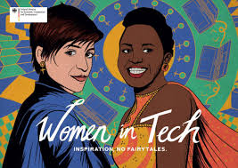

Breaking Barriers and Empowering Women in Tech
My name is Tshenolo Millicent Mogane, and I am deeply passionate about the tech industry. I entered this field with a mission: to break the stereotype that the tech world is meant only for men. My journey is not about competing with men but about showing women that we, too, belong here. By bridging the gender gap, I hope to inspire women to realize their potential and contribute to taking the tech industry to new heights.

Challenging Stereotypes and Bridging the Gender Gap
Deciding to pursue a career in tech was not just a professional choice but a personal challenge. I wanted to prove, not just to others but to myself, that women can thrive in areas traditionally dominated by men. By stepping into this field, I aimed to inspire women to see that it is not impossible to succeed in tech—we have the potential to bring fresh ideas, creativity, and innovation to the table. I believe that a diverse tech industry benefits everyone, and it's time for women to play a more significant role in shaping its future.
Embracing the Challenges of Tech
I won't sugarcoat it—working in the tech industry is challenging. It's a fast-paced world that requires constant learning and adaptability. At first, I doubted whether I could survive in such a demanding environment, but I soon realized that success in tech isn't about knowing everything. It's about having the passion and determination to keep learning and growing. Each new obstacle is an opportunity to improve, and every breakthrough is a reminder of why I chose this path.
The Power of Passion and Continuous Learning
Technology evolves rapidly, which means there's always something new to discover. For me, that's part of the excitement. I've embraced the idea that I will always be learning, and I find joy in challenging myself to keep up with the latest trends and innovations. It's not easy, but it's my passion for technology and my commitment to growth that keep me motivated.
Inspiring Women to Join Tech
Through my journey, I hope to empower other women to explore careers in tech. Women bring unique perspectives, problem-solving abilities, and creativity that are essential for driving innovation. By encouraging more women to enter the industry, we can create a more inclusive and balanced tech community. Together, we can take the tech industry to new heights, proving that it is not just for men but for everyone who dreams big and works hard.